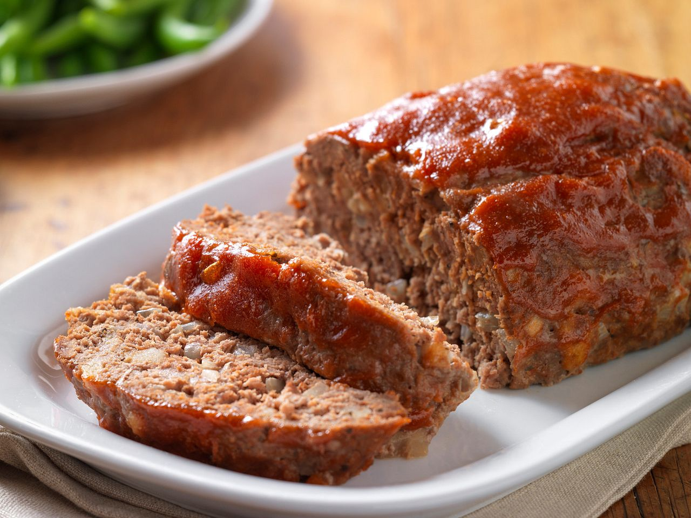

CLassic Meatloaf

Pictured above is a finished classic beef meatloaf
This recipe is easy to prep and make, adn will leave you with a few servings of filling meatloaf
Ingredients
- 1 ½ pounds ground beef
- 1 egg
- 1 onion, chopped
- 1 cup milk
- 1 cup dried bread crumbs
- salt and pepper to taste
- 2 tablespoons brown sugar
- 2 tablespoons prepared mustard
- ⅓ cup ketchup
Directions
- Preheat oven to 350 degrees F (175 degrees C).
- In a large bowl, combine the beef, egg, onion, milk and bread OR cracker crumbs. Season with salt and pepper to taste and place in a lightly greased 9x5-inch loaf pan, or form into a loaf and place in a lightly greased 9x13-inch baking dish.
- In a separate small bowl, combine the brown sugar, mustard and ketchup. Mix well and pour over the meatloaf.
- Bake at 350 degrees F (175 degrees C) for 1 hour.
Editor's Note
- Enjoy this easy meatloaf with our kale salad that pairs perfectly.